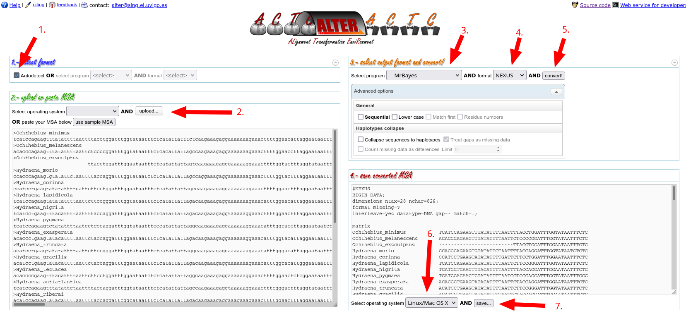
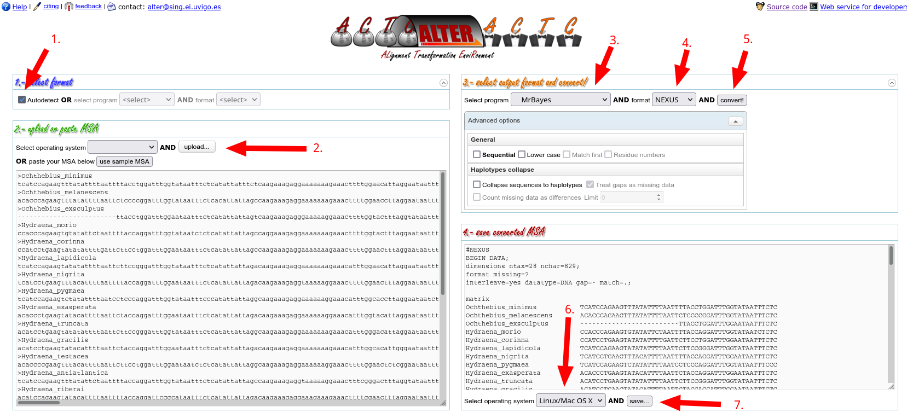

Autodetect; 2. Upload your fasta alignment; 3. Select MrBayes; 4. select NEXUS; 5. click convert!; 6. choose your operating system; 7. click save… to download your nexus alignmentWe will use MrBayes to reconstruct a phylogeny from our alignments. This requires a few more steps than our previous Maximum Likelihood analysis. First of all, we need to convert our alignment into the nexus format, as MrBayes won’t accept any other format. We can do this by using the online tool ALTER (Fig. 9).

Autodetect; 2. Upload your fasta alignment; 3. Select MrBayes; 4. select NEXUS; 5. click convert!; 6. choose your operating system; 7. click save… to download your nexus alignmentA nexus file always begins with #NEXUS followed by different blocks. Each block begins with begin <BLOCK> and ends with end;. The only block present in our file is the data block, but the nexus format allows many additional data to be stored here. Open the nexus file in a text editor and scroll to the very bottom. We will add the options and instructions for MrBayes directly into this file – this is different to e.g., IQ-TREE where we provide all options on the command line. It is a bit more tedious, but comes at the advantage that the settings for our run will be stored together with the data in the same nexus file – this is good in terms of reproducibility.
At the very bottom of the nexus file add
begin mrbayes;This starts the MrBayes block – Reading the file, MrBayes will now know that this is where its instructions are at. First of all, we need to specify the substitution model to be used. Using Modelfinder, we have determined GTR+F+G+I to be the best fitting. On a new line, enter:
lset nst=6 rates=invgamma;nst stands for number of substitution rates. GTR has 6 in total (1 for each exchange possibility between the 4 bases), so we need to specify 6 here. To include gamma distribution of rate heterogeneity across sites plus invariable sites, you need to specify invgamma. Other options are gamma (no invariable sites) or equal (for homogeneous rates across sites). For an overview of how to specify the most commonly used substitution models in MrBayes, please see below.
We now need to specify the priors for our analyses, i.e., our assumptions on what the data will look like. We want these to be uninformative, so will only use flat prior here. We can specify priors for all parameters (only 3 are considered here):
prset statefreqpr=fixed(empirical) revmatpr=Dirichlet(1,1,1,1,1,1) Shapepr=Uniform(0.1,50.0);Note that revmatprior and Shapeprior are the default values, so we wouldn’t need to specify these explicitly. We are using fixed state frequencies (the +F in our model), because ModelTest told us this would fit the data best.
Now we need to tell MrBayes how to perform the analyses:
mcmc nruns=2 nchains=4 ngen=100000 Printfreq=500 Samplefreq=500;We are asking for 2 runs in parallel with 4 chains each. 100,000 generations will be performed, with samples taken and printed to screen avery 500 generations. This concludes our MrBayes block, so we add a
end;As the final line.
The complete MrBayes block now should look like this:
begin mrbayes;
lset nst=6 rates=invgamma;
prset statefreqpr=fixed(empirical) revmatpr=Dirichlet(1,1,1,1,1,1) shapepr=Uniform(0.1,50.0);
mcmc nruns=2 nchains=4 ngen=100000 Printfreq=100 Samplefreq=100;
end;Make sure to save your changes into the nexus file!
We can run MrBayes by executing the app and typing in its terminal:
MrBayes > execute COI_aligned.nexWhile MrBayes is running, it will print out information on the current status of the analysis (Fig 10.)

*) and 4 chains each, so 8 log Likelihoods in total. Heated chains are surrounded by parentheses, and cold chains surrounded by square brackets.In regular intervals MrBayes tells us about the standard deviation of split frequencies – this is a measure for how different the topologies of the two different runs are. We want them to be very similar of course, and a low value here is indicative of that.
Once the initial 100,000 generations are done, MrBayes asks us if we want to continue. Type no and press <ENTER>. MrBayes will produce some run statistics. Type sump and press <ENTER>. Take some time to explore the run statistics here: did the runs converge? Should we let the program run a little longer?
If you are happy and want to produce a consensus tree from the posterior samples, type sumt and press <ENTER>. You can quit the programme now by typing quit and pressing <ENTER>. MrBayes has produced a consensus tree file (ending with .con.tre), which can now be looked at using a tree viewer such as FigTree. MrBayes has further sampled all trees and model parameters over the generations (stored in the .t and .p files, respectively). THese files can be further explored to determine how well the runs have converged, e.g., by using this online tool.
Do a Bayesian phylogeny for the lwr alignment!
A list of models supported by MrBayes and how to specify them
| I | lset rates=propinv; |
| G | lset rates=gamma; |
| F | prset statefreqpr=fixed(empirical); |
| I + G | lset rates=invgamma; |
| G + F | prset statefreqpr=fixed(empirical); lset rates=gamma; |
| I + F | prset statefreqpr=fixed(empirical); lset rates=propinv; |
| I + G + F | prset statefreqpr=fixed(empirical); lset rates=invgamma; |
| GTR | lset nst=6; |
| SYM | lset nst=6 prset statefreqpr=fixed(equal); |
| HKY | lset nst=2; |
| K2P | lset nst=2 prset statefreqpr=fixed(equal); |
| F81 | lset nst=1; |
| JC | lset nst=1 prset statefreqpr=fixed(equal); |
| Poisson | prset aamodelpr=fixed(poisson); |
| Dayhoff | prset aamodelpr=fixed(dayhoff); |
| mtREV | prset aamodelpr=fixed(mtrev); |
| mtMAM | prset aamodelpr=fixed(mtmam); |
| WAG | prset aamodelpr=fixed(wag); |
| rtREV | prset aamodelpr=fixed(rtrev); |
| cpREV | prset aamodelpr=fixed(cprev); |
| VT | prset aamodelpr=fixed(vt); |
| Blosum62 | prset aamodelpr=fixed(blosum); |
| JTT | prset aamodelpr=fixed(jtt); |